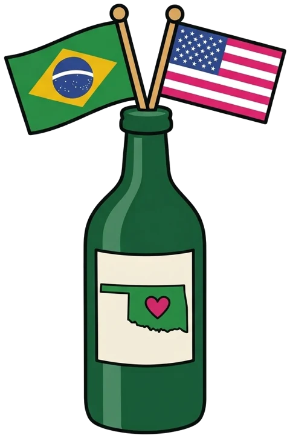

01FEVEREIRO
O Filho de Mil Homens
Valter Hugo Mãe
Um pescador de quarenta anos que queria um filho e acabou formando uma família inteira.
PORTUGALUm livro por mês, um encontro por mês e conversa que vai muito além da última página. Lemos autoras e autores do mundo inteiro, com sotaque brasileiro, em Oklahoma.
de fevereiro a novembro, um livro de cada vez

Herdeiras do Mar conta para os Estados Unidos e para a Coreia do Sul.
Cada mês tem um livro novo, escolhido entre as sugestões do grupo.
Papel, Kindle ou audiolivro. A pata aprova todos os formatos.
Conversa, comidinha, nota em corações e aquela frase que todo mundo sublinhou.